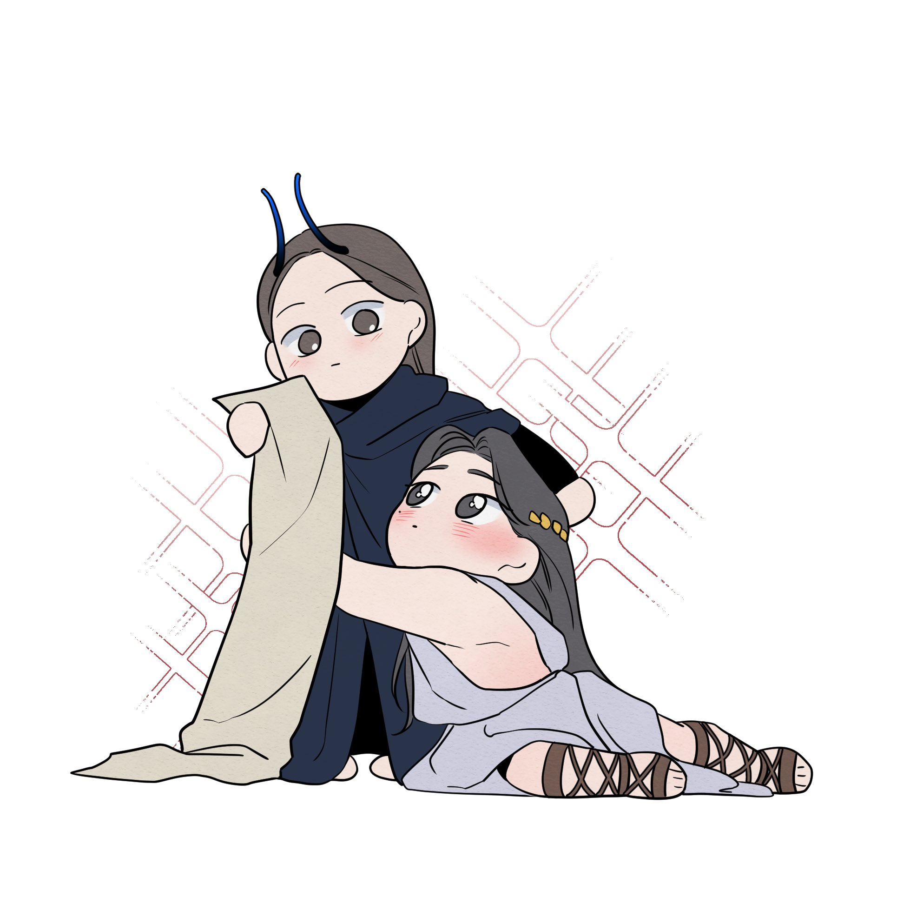

Sobre mí

Magda Arellano
Escritora y lectora beta.
Siendo hija única, desarrollé la habilidad de labrar mundos llenos de colores y de rodearme de personajes que se alojaban en el interior de mis juguetes, o de lo que sea que tuviera a mano, podían ser mis útiles escolares, dos popotes, un insecto o, incluso, la pared. Ir a la escuela, ni a cualquier otra parte, me privó de crear en mi mente aquello que me alejaba de la solitaria realidad en la que vivía. Un error. O así lo interpreté tiempo después, cuando quise abrir las puertas a otros niños con la esperanza de que ellos me entendieran.
Lo más amable que recibí fue el extrañamiento de sus miradas.
Poco a poco me retraje, y comencé a vivir una etapa en la que era fácil acoplarse a lo estereotipicamente correcto de la época, por allá del 2008. No me quejo, fue divertido, aunque muy probablemente hubiera acortado mi dilación en encontrar refugio en la lectura.
Fue en el 2013 que un libro tocó ese rincón olvidado y enterrado debajo de las inquietudes a las que todo adolescente suele enfrentarse. No pasó en una librería, tianguis o supermercado, sino sobre el pupitre de una compañera, a la hora de receso de un día sábado —sí, hasta los sábados me mandaban a clases; el inglés nunca fue mi fuerte—. Recuerdo pedirle prestado el libro unos minutos, apenas alcancé a leer las primeras páginas, así que me propuse buscarlo en la próxima salida. Así comenzó mi historial de todo tipo de lecturas, novelas, cuentos, colecciones de relatos, mangas, manhwas y manhuas. Y entre que me maravillaba con una pluma diferente de narrar, también quise plasmar en letras aquello que me inquietaba. Propuestas, borradores, notas o palabras que al leer dibujaban en mi mente un bosquejo de historias que en ese momento me parecían fascinantes, la mayoría en torno al romance.
Mi relación con el género de romance fue el detonante por entender el significado del amor, qué era amar y ser amado, si todo aquello se reducía a lo que había visto y leído o si existían otras vértices para abordar. Esto, aunado al hambre de conciencia social que me sacudió al entrar a la universidad —especialmente al movimiento feminista—, cimentó las bases que me llevaron a autoras como Elisa Díaz Castelo, Fernanda Melchor, Cristina Rivera Garza, Angeles Mastretta, Isabel Allende y Piedad Bonnett. Y si bien no fue por ellas que me senté a escribir, sí que tuvieron que ver en aclarar mi mente y formular mejor las preguntas por las que escribía.
Hoy, te abro las puertas a este rincón, a mi buhardilla de escritos donde disfruto experimentar, nunca estoy cerrada a probar distintos géneros y siempre mantengo abierta la puerta para mejorar.
Besos en la k*la 💗